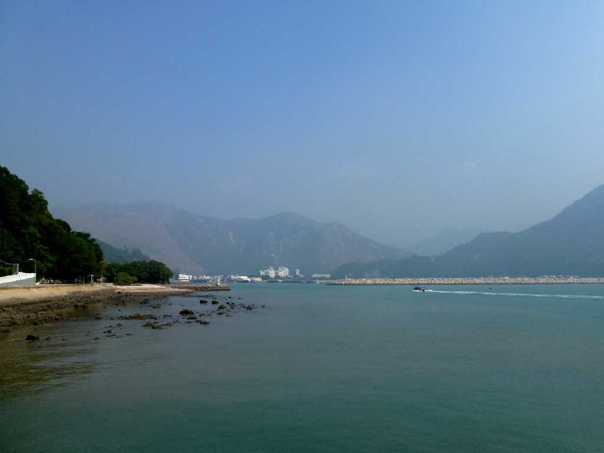
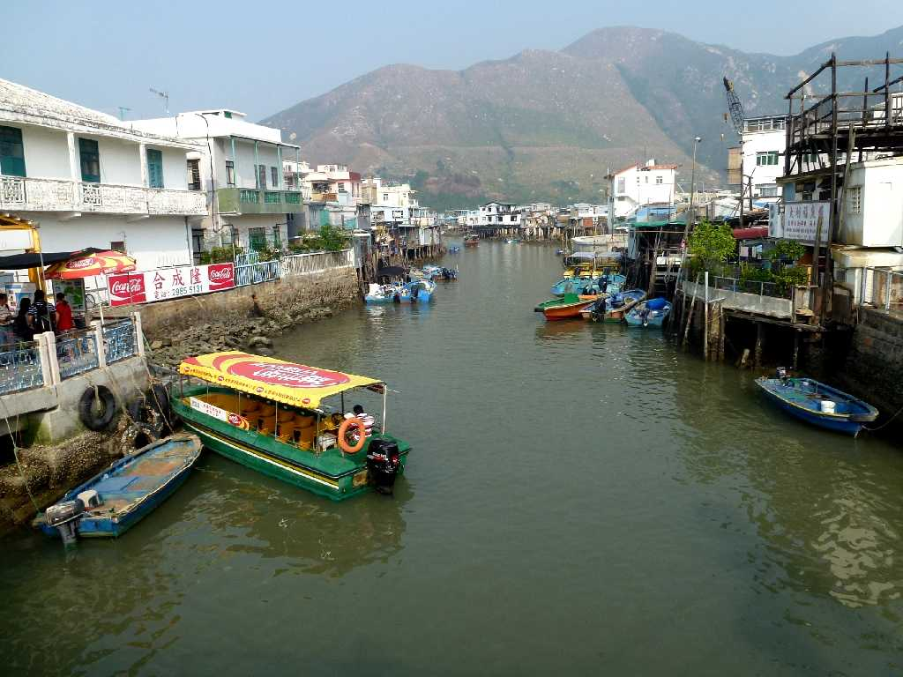
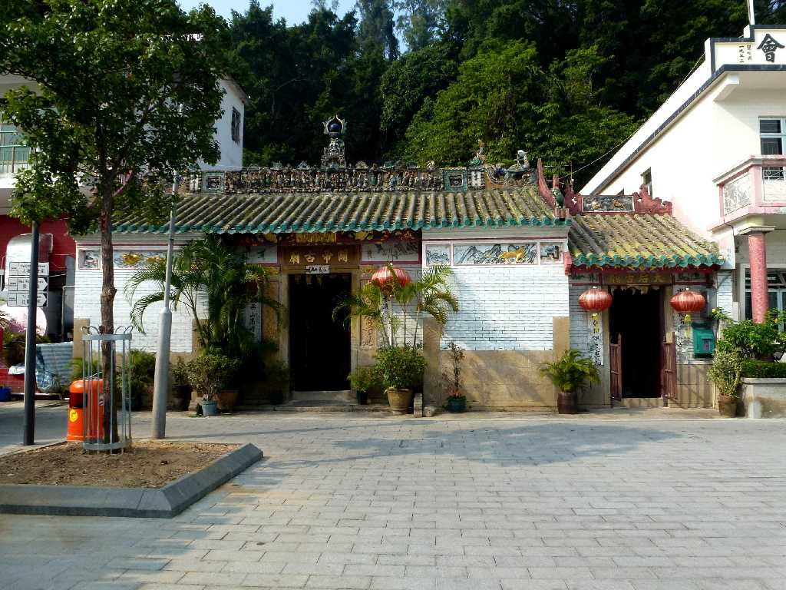
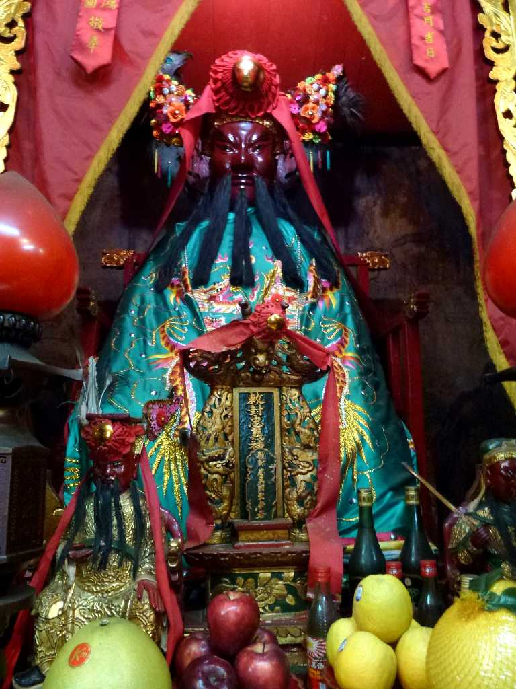
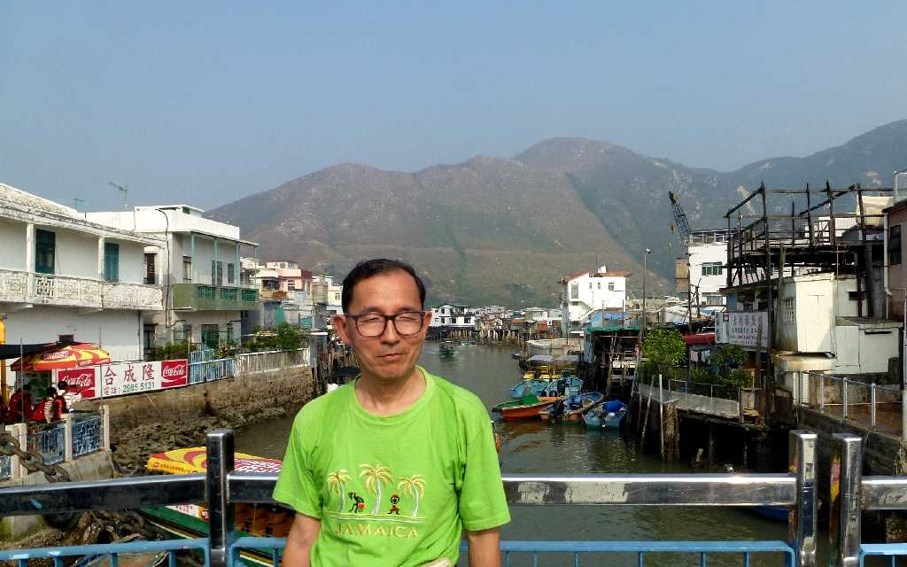

Tai O Lantau Island Hong Kong 香港 大澳
昔ながらの香港の漁村風景を残す大澳

Central Tai O
香港のベニスと云われ迷路のような運河や高床式の水上家屋が並ぶ素朴な漁村

Kwan Tai Temple Tai O
１４８８年に創られた三国志時代に活躍した武将の關雲長を祭る廟

Kwan Tai Temple
關雲長＝関羽

November 13 2012 Tai O Hong Kong